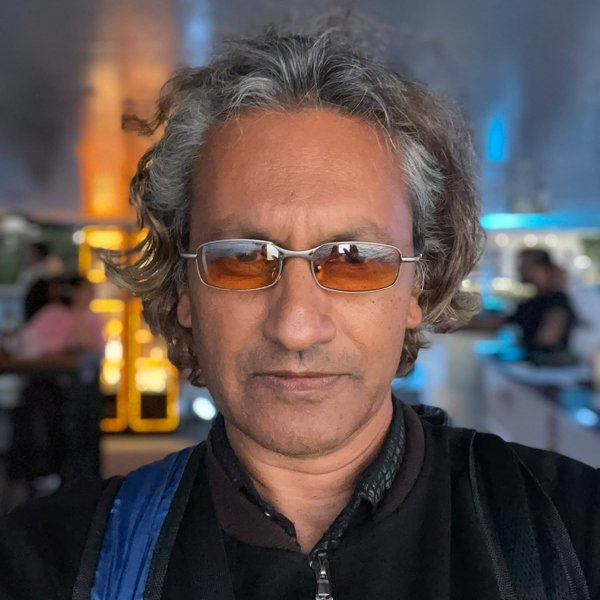

A transnational live performance project — narrative-driven acoustic sets, built by moving continuously across five countries rather than staying put.
RedEyeZack — Zack Qureshi — began performing on the streets of London, taken on as a deliberate challenge to break years of stage fright. The journey that followed, through Barcelona, Istanbul and India, pushed his songwriting toward something more evocative and philosophical. redeyezack & friends is what that journey became: not a fixed band, but a fluid live identity — solo, duo, or full collaborative "friends" configuration — shaped by whoever and wherever it meets next.

Each stop is a multi-city hub, not a single gig. With studio production now underway, the remaining European leg is tentative while focus shifts to finishing the repertoire first.
An all-original 30-song repertoire: 20 (Sketches & Demos) already written, with 10 (Works In Progress) moving into full production with a UK producer now on board. "Secret Garden" releases October 16, with "Flying Free" following in December. First single already out: "The Purpose Of Existence," first in a planned trilogy written across Barcelona and Mumbai. Collaborations with traditional and ethnic instrumentalists and percussionists shape a sound built to connect with any audience, anywhere. Rights are handled properly from the outset — PRS royalty collection has been active for three years, with a handful of catalogue songs held back from release until their structures are finalised and registered.
▶ Listen and watch the full "Acoustic Clips" playlist on YouTubeFestivals, venues, house concerts, weddings, corporate events, collaborations. Based in the UK, open to international invitations. Email or WhatsApp your date & venue — replies within 48 hours.
redeyezack@protonmail.com WhatsApp: +44 7845 450242This is a grassroots, independently-funded tour. Currently looking to raise £20,000 to fund the 2nd 12-month circuit:
Catalogue rights are being managed with a longer game in mind — individual songs may be opened up as their own investment down the line as the strongest tracks emerge.
December 9 marks exactly one year since the first gig in Goa, at Garden Of Dreams (Arambol) — the day this all began. Year 2 starts there. Get involved before then to be part of it from day one.
Open to sponsors and backers who want to be part of it — reply for a 15-minute call, no pitch deck required.
redeyezack@protonmail.com redeyezack.co.uk